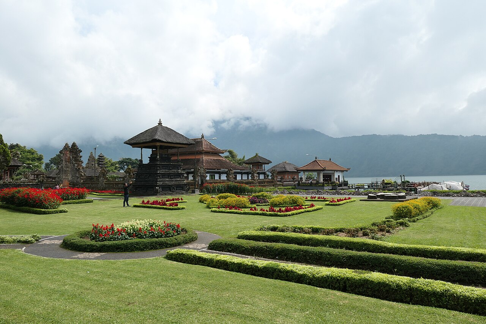

Индонезия · Бали

Бали — остров тысячи храмов: террасы Тегалаланга, где слои риса спускаются ступеньками, как зелёная лестница к небу; водопады в джунглях; серфинг на закате и церемонии с лепестками на дороге — каждое утро местные выставляют маленькие корзинки кананг-сари, и улица на время становится храмом. Убуд — правильная база: кофейни с видом на джунгли, лес обезьян, мастерские батика и йога под цикад. Храм Улун-Дану-Бератан стоит прямо на озере и отражается так, будто парит; на входе выдают саронг — надевайте без разговоров, это часть уважения. Волны: Кута подойдёт новичкам, Улувату — тем, кто уже понимает, что делает; школа серфинга стоит дешевле ужина в Европе. Практика: скутер — только в шлеме и с правами, трафик живой; местная SIM-карта стоит копейки и решает интернет за весь отпуск. Идеален для перезагрузки: йога утром, рыба на гриле вечером, звёзды — без счёта: счёт тут ведут только цикады. Возвращаетесь другим человеком, тихо, но гарантированно.
Что знать перед поездкой
- Убуд — база для храмов и воды
- Скутер — только в шлеме и с правами
- Местная SIM-карта стоит копейки — интернет решён